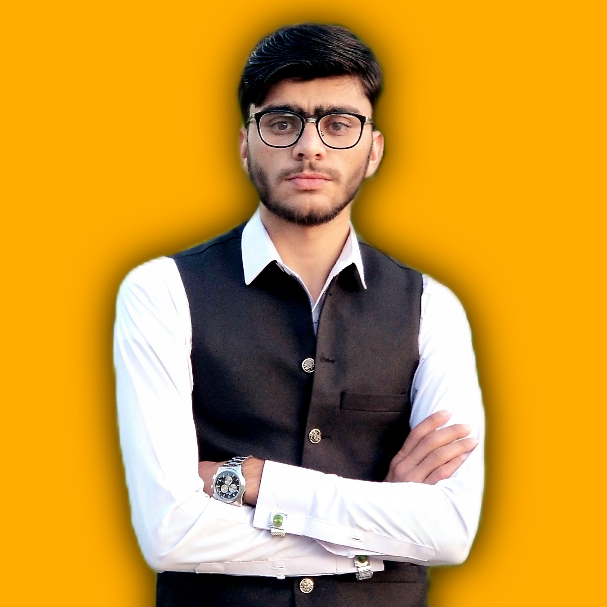

Waqas Muhammad
Computer Science student at the University of Engineering & Technology, Peshawar. Passionate about building modern web applications and exploring the latest technologies in the field of software engineering. I focus on creating clean, efficient, and user-friendly digital experiences.
Contact Information
Department: Department of Computer Science
Institution: University of Engineering & Technology, Peshawar
Course: CS 224L Web Technologies
Lecturer: Mr. Mohammad, Lecturer